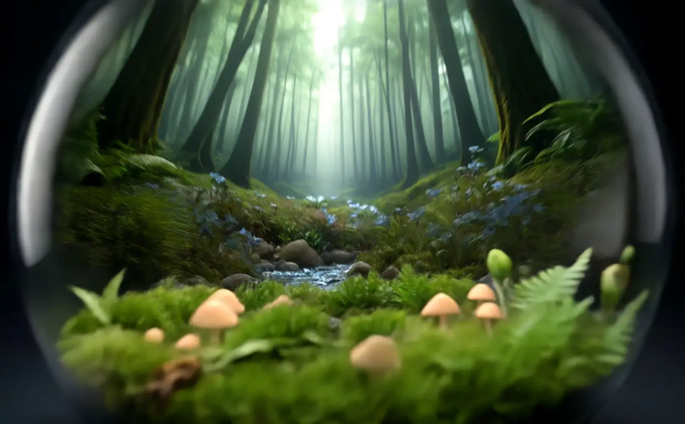
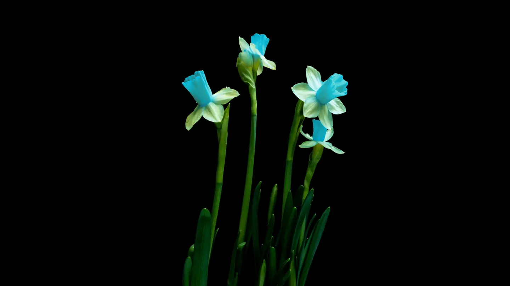

The Origin
It started with one jar that refused to die.
Years ago, a handful of moss from a family hike was sealed in a spare pickle jar as an experiment. No watering, no opening — just light. Months passed, and inside the glass it rained, grew, decayed and grew again. That first stubborn little world never stopped living.
Terrar U grew out of that jar: an obsession with bringing real, working nature indoors — not as decoration, but as a living companion that asks for nothing and gives back calm.

01
Sustainability
Ethically gathered moss, rescued glass vessels, plastic-free packaging. A sealed world recycles everything — so do we.
02
Meticulous handcraft
Every landscape is built with tweezers, layer by layer: drainage, charcoal, soil, stone, root, moss. No two are alike.
03
The art of patience
A terrarium teaches slowness. Growth is measured in seasons, not days — and that is exactly the point.

The Maker
Hi, I'm Shlomi!
Shlomi Meroz is a dedicated father of three boys and a passionate creator with a deep love for nature and craftsmanship. Balancing the joyful chaos of raising three young sons with his creative pursuits, he finds his rhythm in both family life and his hands-on hobbies.
When he isn’t busy being a hands-on dad, Shlomi channels his patience and attention to detail into building custom terrariums — self-sustaining miniature ecosystems encased in glass, each one a quiet piece of living art.
Commission a custom world